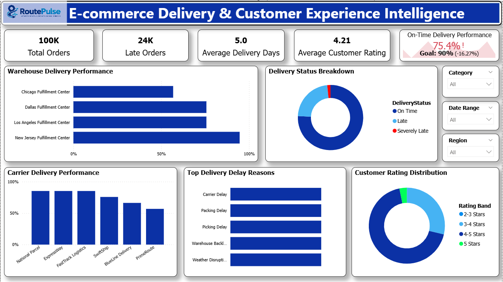
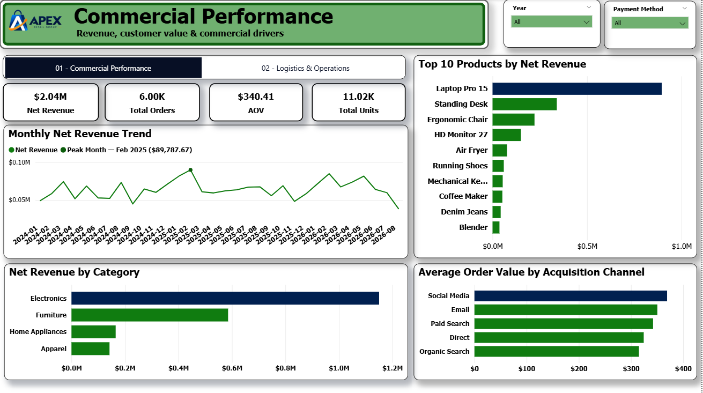
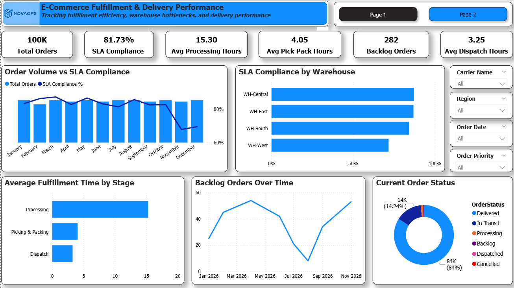
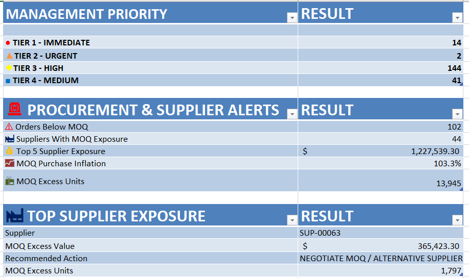
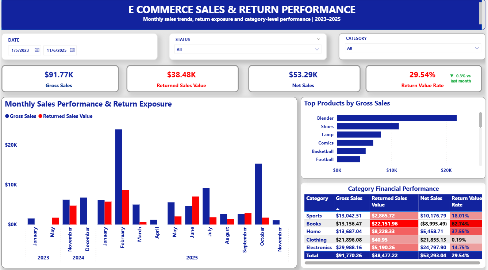
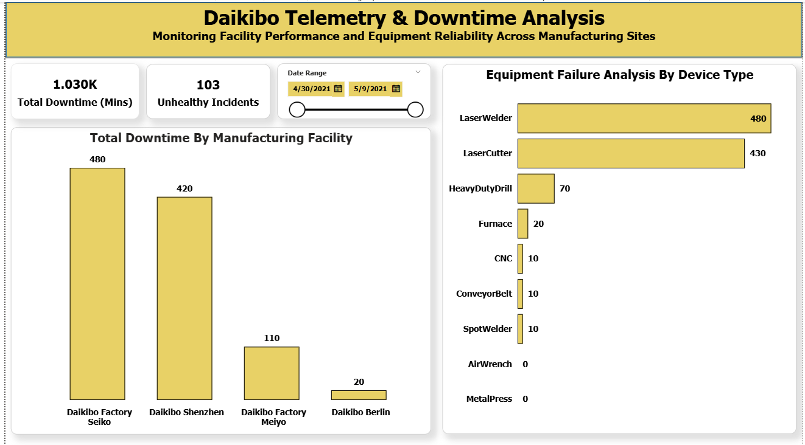

Turning operational data into clearer business decisions.
I help e-commerce and operations teams turn sales, inventory, fulfillment and delivery data into clearer business decisions.
What I Help Businesses Understand
Bringing clarity to daily transactions, order flows, and stock levels.
Sales Performance & Revenue Trends
Reviewing product category contributions, average order value, and order volumes over time.
Inventory Risk & Replenishment
Tracking stock levels, days cover, and lead times to manage reorders effectively.
Fulfillment Bottlenecks & Late Deliveries
Examining order processing speeds and delivery timelines against internal targets.
Cancellations & Returns
Measuring the impact of returned items and canceled orders on net revenue.
Selected Case Studies
Practical analytics projects focused on sales, inventory, fulfillment, delivery and operational performance.
E-Commerce Delivery Performance Dashboard
Project Name: RoutePulse
Evaluating delivery performance and the gap between current delivery metrics and target goals.

Commercial & Operations Dashboard (Case Study)
Project Name: Apex Retail Group
Reviewing commercial performance, sales distribution, and customer order outcomes.

Logistics & Fulfillment Performance Dashboard
Project Name: NovaCart / NOVAOPS
Tracing order flow: Order → Processing → Picking & Packing → Dispatch → Delivery.

E-Commerce Inventory Replenishment & Stockout Control System
Inventory-control analysis modeling stock levels and replenishment needs.

E-Commerce Sales & Return Analytics
Analyzing gross and net revenue differences resulting from product returns.

Manufacturing Telemetry Downtime Analysis
Context: Deloitte Australia Virtual Job Simulation — Forage
Analyzing equipment sensor logs to identify primary causes of industrial downtime.

How I Work
A straightforward, structured approach to turning raw operational data into clarity.
Clean
Make messy business data usable.
Analyze
Find trends, bottlenecks, exceptions and operational problems.
Explain
Turn the findings into clear business insights and decisions.
About My Focus
I focus on the space between raw business data and operational decisions.
My core work centers around e-commerce sales, inventory, replenishment, orders, returns, fulfillment, and delivery performance using tools like Excel, Power Query, SQL/MySQL, Power BI, and Google Sheets.
Have a sales, inventory, fulfillment or delivery problem? Let's talk.
Reach out to discuss your operational challenges and data analysis needs.